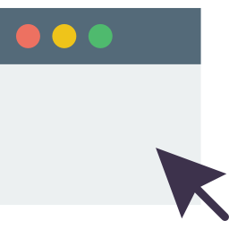

<!-- {{recruiting_now type=choice input=toggle label='Open Recruitement?'}} -->
{{#if recruiting_now}}
{{#section recruitment}}
<div class="section light-bg" id="join">
  <div class="container">
    <div class="section-title">
      <h3>Join the organization</h3>
    </div>
    <!-- ./section-title -->

    <ul class="nav nav-tabs nav-justified" role="tablist">
      <li class="nav-item">
        <a class="nav-link active" data-toggle="tab" href="#ApplyOnline">Apply Online</a>
      </li>
      <li class="nav-item">
        <a class="nav-link" data-toggle="tab" href="#TeamOrientation">Team Orientation</a>
      </li>
      <li class="nav-item">
        <a class="nav-link" data-toggle="tab" href="#PersonalInterview">Personal Interview</a>
      </li>
      <li class="nav-item">
        <a class="nav-link" data-toggle="tab" href="#OrientationDay">Orientation Day</a>
      </li>
    </ul>
    <!-- ./nav-tabs -->

    <div class="tab-content">
      <div class="tab-pane fade show active" id="ApplyOnline">
        <div class="d-flex flex-column flex-lg-row">
          
          <div>
            <h2>First step</h2>
            <p class="lead">Thank you for showing interest in joining Project 2030.</p>
            <p>
              Project 2030, founded in 2018, aims to equip youth in the region with 21st-century skills
              and behaviors to improve society. We offer the opportunity to work in a
              challenging environment, in fields such as Event Planning, Finance, Social Media Marketing
              and Education on a local level. Furthermore, it's a great way to network with like-minded
              young people who are as passionate about global issues as you are.
            </p>
            <p>
              We currently have more than 20 volunteer members and we
              hope to see you as part of this organization soon! Fill in the application form
              here.
            </p>
            <p>
              <b>Deadline: {{deadline type=date format='%a %d. %b %Y'}}</b>
            </p>
            <p>
              <a href="#" id="btn-joinnow"
                 data-form-link="{{form_link type=link}}"
                 class="btn btn-primary">Join Now</a>
            </p>
          </div>
        </div>
      </div>

      <div class="tab-pane fade" id="TeamOrientation">
        <div class="d-flex flex-column flex-lg-row">
          <div>
            <h2>Taking part in Project 2030</h2>
            <p class="lead">You miss 100% of the shots you don't take.</p>
            <p>
              Here you will get to know a little more about our organization,
              followed by the Team Orientation, debriefing, and lastly a Q&A for anyone in need
              of any further clarifications.
            </p>
            <p>
              Our team-based experiences will provide you with personal and professional
              skills in an environment that empowers you to grow.
              As a Project 2030 member, your actions have a direct impact on the people around you.
              From impacting your teammates to driving change in your community, the
              opportunities to make a change are endless and entirely up to you. Therefore we
              would like to see how you work in a team setting.
            </p>
            <p>
              <b>
                {{team_orientation_days_start type=date format='%a %d. %b %Y'}} -
                {{team_orientation_days_end type=date format='%a %d. %b %Y'}}
              </b>
            </p>
          </div>
          
        </div>
      </div>

      <div class="tab-pane fade" id="PersonalInterview">
        <div class="d-flex flex-column flex-lg-row">
          
          <div>
            <h2>Your motivation to join</h2>
            <p class="lead">To speak and to speak well are two things. </p>
            <p>In case of passing the Group Assessment you will be invited to a personal interview.
            </p>
            <p>Examples of the questions you are likely to face:
              <ul>
                <li><span>Where do you see yourself in 5 years?</span></li>
                <li><span>How will you motivate your team?</span></li>
                <li><span>Why do you want to become a member?</span></li>
                <li><span>What are your strengths and weaknesses?<span></li>
                  <li><span>How do you cope with stress?</span></i>
              </ul>
            </p>
            <p>
              <b>
                {{personal_interview_days_start type=date format='%a %d. %b %Y'}} -
                {{personal_interview_days_end type=date format='%a %d. %b %Y'}}
              </b>
            </p>
          </div>
        </div>
      </div>

      <div class="tab-pane fade" id="OrientationDay">
        <div class="d-flex flex-column flex-lg-row">
          <div>
            <h2>Solving the problems that face our world</h2>
            <p class="lead">Success doesn't come to you, you go to it. </p>
            <p>
              From the day you join you will be expected to communicate in a variety of environments.
              This will enable you to work within teams to develop your skills through facilitating events.
            </p>
            <p>
              It's time to get to know the people involved in your branch,
              discover the functional area you are going to work in and the amazing members
              of your team. Make sure to book the whole day for Project 2030.
              We are very much looking forward to seeing you!
            </p>
            <p>
              <b>
                {{final_orientation_day type=date format='%a %d. %b %Y'}}
              </b>
            </p>
          </div>
          
        </div>
      </div>
    </div>
    <!-- ./tab-content -->
  </div>
</div>
<!-- ./section #join -->
{{/section}}
{{/if}}
